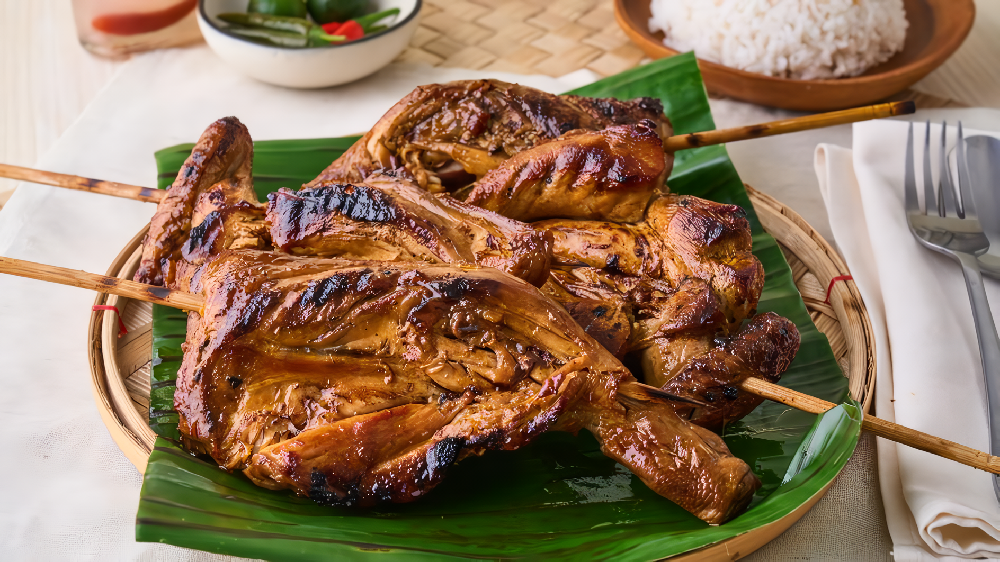

Chicken Inasal Recipe
Description
A popular grilled chicken dish marinated in a mixture of calamansi (Filipino lime), soy sauce, garlic, ginger, and annatto oil. It's known for its smoky flavor and often served with a side of vinegar-based dipping sauce.
Ingredients
- Chicken pieces
- Calamansi (or lemon)
- Soy sauce
- Garlic
- Ginger
- Annatto oil (atsuete oil)
- Salt and pepper
Steps
- Marinate chicken in a mixture of calamansi, soy sauce, garlic, ginger, and annatto oil.
- Grill until cooked through and slightly charred.
- Serve with a side of vinegar-based dipping sauce.